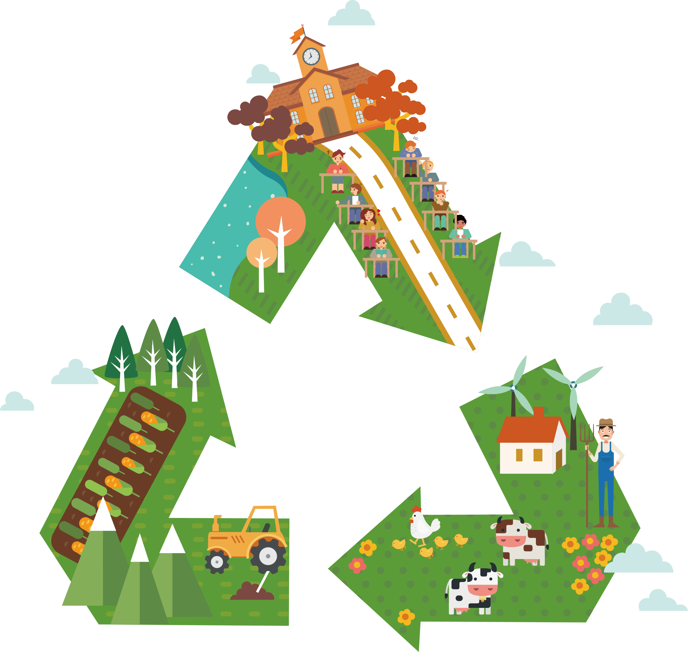

ทรัพยากรธรรมชาติ♻️ หมายถึงอะไร?
ทรัพยากรธรรมชาติ (natural resources) หมายถึง สิ่งที่ได้มาจากธรรมชาติซึ่งมีประโยชน์ต่อความเป็นอยู่ของมนุษย์โดยเฉพาะเป็นปัจจัยสี่ที่มีความจำเป็นในการดำรงชีวิตที่มนุษย์สามารถเสาะแสวงหามาใช้ เช่น พืช สัตว์ แร่ธาตุ ป่าไม้ ถ่านหิน และน้ำมัน เป็นต้น สามารถแบ่งทรัพยากรธรรมชาติออกเป็น 3 ประเภทใหญ่ ๆ ได้แก่
- ทรัพยากรธรรมชาติที่ใช้ไม่หมดสิ้น (non-exhausting natural resource) เป็นทรัพยากรธรรมชาติที่มีอยู่มาก พบได้ทุกแห่งในโลก มีความจำเป็นในการดำรงชีวิตของสิ่งมีชีวิตทุกชนิดทรัพยากรเหล่านี้หากใช้ไม่ดี ไม่มีการดูแลรักษาทรัพยากรธรรมชาติเหล่านี้ ทรัพยากรที่มีค่ามหาศาลเหล่านี้อาจเสื่อมสภาพไปจนไม่สามารถนำไปใช้ประโยชน์ได้ถ้าใช้อย่างไม่ระมัดระวัง ได้แก่น้ำ อากาศ แสงสว่างจากดวงอาทิตย์
- ทรัพยากรธรรมชาติที่บำรุงรักษาให้คงสภาพอยู่ได้ เป็นทรัพยากรธรรมชาติที่มีอยู่บนผิวโลกตามแหล่งต่าง ๆ ถ้ามนุษย์ใช้ทรัพยากรเหล่านี้อย่างถูกต้องและมีการบำรุงรักษาแล้วทรัพยากรธรรมชาติเหล่านี้จะยังคงอยู่และใช้ประโยชน์ได้ตลอดไป ได้แก่ ดิน ป่าไม้ ทุ่งหญ้า สัตว์ป่า พลังงานมนุษย์
- ทรัพยากรธรรมชาติที่ใช้แล้วสิ้นเปลือง เป็นทรัพยากรธรรมชาติที่ใช้แล้วหมดไป ไม่สามารถสร้างขึ้นมาใหม่ได้หรือไม่สามารถหมุนเวียนกลับมาใช้ใหม่ได้ หรือถ้าทำได้ก็กินเวลานานนับพันนับหมื่นปีทรัพยากรเหล่านี้ ได้แก่แร่ธาตุ (รวมทั้งน้ำมันถ่านหิน) และทิวทัศน์ที่สวยงาม
- สำหรับทรัพยากรธรรมชาติที่มีความสำคัญและจำเป็นต่อการดำเนินชีวิตของมนุษย์ ได้แก่ น้ำ ดิน อากาศ ป่าไม้และสิ่งมีชีวิตต่างถิ่น ดังนั้น เพื่อให้การใช้ทรัพยากรธรรมชาติอย่างยั่งยืนและยาวนานที่สุดและได้ประโยชน์สูงสุด จึงต้องมีวิธีใช้วิธีอนุรักษ์บูรณะฟื้นฟูดูแลรักษาทรัพยากรธรรมชาติให้คงอยู่ยาวนานที่สุด
ความสำคัญของน้ำ💧
น้ำเป็นทรัพยากรธรรมชาติที่มีความจำเป็นต่อการดำรงชีวิตของคนเรา เพื่อใช้ในการอุปโภคบริโภค การเกษตร การคมนาคมขนส่ง การประมง และอื่น ๆ น้ำยังเป็นองค์ประกอบที่สำคัญที่สุดในเซลล์ของสิ่งมีชีวิตร่างกายคนเรามีน้ำเป็นส่วนประกอบประมาณ 2 ใน 3 ส่วนของน้ำหนักตัว น้ำบนผิวโลกมีอยู่ประมาณ 3 ใน 4 ส่วน ซึ่งส่วนใหญ่เป็นน้ำเค็มในทะเลและมหาสมุทรถึง 97.41% ส่วนน้ำจืดซึ่งเป็นสิ่งจำเป็นและมีค่ามากที่สุดของสิ่งมีชีวิตมีอยู่เพียง 2.59% น้ำจืดนี้พบอยู่ในรูปของภูเขาน้ำแข็งขั้วโลกและธารน้ำแข็ง น้ำใต้ดิน และเป็นน้ำจืดที่นำไปใช้ประโยชน์ได้อย่างแท้จริงเพียง 0.014% เท่านั้น
คุณสมบัติของน้ำ🌊
น้ำมีความโปร่งใส ไม่มีรส ไม่มีกลิ่น และไม่มีสี เป้นสารเคมีที่เป็นองค์ประกอบหลักของลำธารม,แม่น้ำ,และมหาสมุทรในโลก หรือแหน่งน้ำต่างๆ
น้ำที่มนุษย์นำไปใช้ประโยชน์มาจาก 3 แหน่งใหม่ คือ
- หยาดน้ำฟ้า (precipitation) หมายถึง น้ำที่ได้จากบรรยากาศที่มนุษย์นำมาใช้ประโยชน์ได้ แหล่งน้ำในบรรยากาศจะอยู่ในรูปของไอน้ำในอากาศ เมฆ น้ำ ฝน ลูกเห็บ หิมะ น้ำค้าง
- น้ำผิวดิน (surface water) ได้แก่ น้ำในแม่น้ำลำคลอง บึง บ่อ ทะเลสาบ ซึ่งได้จากน้ำฝนที่ตกลงมาและที่ไหลซึมออกจากใต้ดินรวมถึงน้ำที่เกิดจากการละลายของหิมะอีกด้วย
- น้ำใต้ดิน (ground water) หมายถึง น้ำที่อยู่ใต้ผิวดิน ซึ่งเกิดจากการซึมผ่านของน้ำผิวดิน น้ำฝน และหิมะลงสู่ชั้นใต้ดินจนกลายเป็นน้ำในดินและน้ำบาดาลที่เราสามารถขุดและสูบขึ้นมาใช้ได้